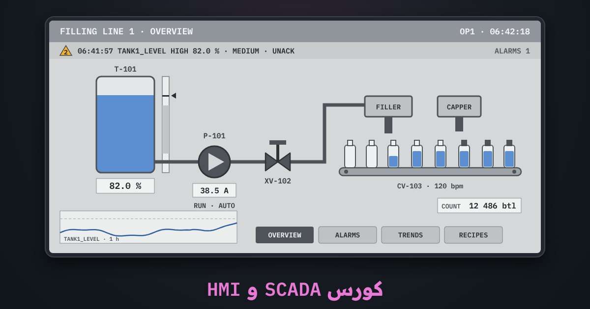

كورس · 12 درس · محطة SCADA ومصمّم شاشاتبالعربية الفصحى
كورس SCADA و HMI
إزاي تصمّم شاشة تشغيل المشغّل يفهمها في ثانية، وتربطها بالـ PLC، وتدير الإنذارات والترندات والصلاحيات والوصفات على منظومة SCADA حديثة. الكورس مبني على WinCC Unified في TIA Portal، مع مقارنة بـ Ignition و FactoryTalk Optix، ومعايير ISA-101 و ISA-18.2 و IEC 62443.
الدرس الأول مفتوح للكل، والمحاكيين بيتفتحوا مع الكورس

المحتوى
12 درس بالترتيب، كل درس وراه تمرين على المحاكي
الدروس مكتوبة بالعربية الفصحى، بالمصطلحات زي ما هي في WinCC Unified و TIA Portal. كل درس فيه أسئلة، وآخر درس فيه المشروع والامتحان النهائي.
- ما SCADA وما HMI؟مفتوح للكل
- HMI و SCADA: الفرق في جملتين
- لوحة التشغيل، حاسوب SCADA، و DCS
- مما تتكوّن منظومة SCADA؟
- أحدث المنصات في السوق
- ماذا يحتاج الفني من هذا الكورس؟
- أسئلةأسئلة الدرس
- المتغيرات والاتصال بالـ PLC
- ما الوسم؟ خارجي وداخلي
- الاتصال بالـ PLC وفحصه
- ترتيب الفحص عند «لا اتصال»
- أنواع البيانات: الخطأ الذي يعطي رقمًا صحيح الشكل…
- التحويل الخطي: من 27648 إلى نسبة مئوية
- دورة القراءة وحِمل الاتصال
- محاكيأصلح إعدادات الاتصال بالـ PLC S7-1500 على 192.168.0.1،…
- أسئلةأسئلة الدرس
- تصميم الشاشات عالية الأداء (ISA-101)
- لماذا الشاشة «المملة» أفضل؟
- قواعد الألوان والرموز
- مستويات الشاشات الأربعة
- عرض القيم التناظرية
- قائمة فحص لشاشة سيئة
- محاكيأصلح شاشة سيئة التصميم حسب ISA-101…
- أسئلةأسئلة الدرس
- العناصر الأساسية: الأزرار وحقول الإدخال والمؤشرات
- الأزرار: أي حدث وأي دالة؟
- حقل الإدخال والإخراج والحدود
- المؤشرات: الحالة والأشرطة والمقاييس
- جدول الربط لمضخة P-101
- الاختبار قبل الخط: PLCSIM و Runtime
- محاكيابنِ شاشة تشغيل المضخة…
- أسئلةأسئلة الدرس
- الحركة والديناميكية والوجوه الجاهزة
- ما الديناميكية؟
- اللون حسب الحالة: صمام بثلاث حالات
- الظهور والحركة
- الوجوه الجاهزة Faceplates والأنواع المعرّفة
- القوالب ونوافذ الشاشات
- محاكياربط مستوى الخزان بـ Tank1_Level…
- أسئلةأسئلة الدرس
- الإنذارات وإدارتها (ISA-18.2)
- ما الإنذار؟ وما ليس إنذارًا
- الفئات والأولويات والحالات
- فيضان الإنذارات وأول إنذار
- الإنذار المتكرر: النطاق الميت والتأخير والتجميد المؤقت
- الترشيد وفلسفة الإنذارات
- محاكيفصل الضاغط فأغرق الشاشة بالإنذارات…
- أسئلةأسئلة الدرس
- الترندات والأرشفة
- الترند الحي والترند التاريخي
- معدل العيّنات والضغط وحجم الأرشيف
- قراءة الترند كالمحقّق
- حادثة: فاض الخزان ليلًا
- حفظ الأرشيف وتصديره
- محاكيفاض الخزان ليلة أمس…
- أسئلةأسئلة الدرس
- المستخدمون والصلاحيات وأمن المنظومة
- لماذا الأدوار والصلاحيات؟
- المستخدمون في WinCC Unified
- سجل التدقيق (Audit trail)
- أساسيات IEC 62443 لأنظمة SCADA
- أخطاء شائعة في المصانع
- محاكياضبط مصفوفة الأدوار الأربعة…
- أسئلةأسئلة الدرس
- الوصفات والسكربتات
- ما الوصفة؟ ولماذا نحتاجها؟
- تحميل الوصفة إلى الـ PLC بأمان
- سكربتات JavaScript في WinCC Unified
- المهام المجدولة
- كيف تعرف أين المشكلة؟
- محاكيعدّل سجل وصفة «تعبئة العصير»…
- أسئلةأسئلة الدرس
- معمارية SCADA: الخوادم والعملاء والتكرار
- من محطة واحدة إلى خادم وعملاء
- OPC UA: اللغة المشتركة
- الخادم الاحتياطي (Redundancy)
- الشبكة المقسّمة وأمنها
- الحافة والسحابة
- محاكياضبط زوج الخادمين ورابط التزامن ووجّه عميل الويب…
- أسئلةأسئلة الدرس
- التشغيل والاختبار وتشخيص الأعطال
- الاختبار قبل المصنع: PLCSIM والمحاكاة
- التحميل إلى اللوحة
- طريقة منهجية للتشخيص
- الأعطال الأربعة الأشهر
- أخطاء تكلّف ساعات
- محاكياضغط «ابدأ» ليُخفى في المحطة 4 أعطال…
- أسئلةأسئلة الدرس
- المشروع: SCADA كاملة لخط تعبئة + الامتحان
- مواصفات المشروع
- هيكل الشاشات والتنقل
- قائمة التنفيذ
- خطة الاختبار والتسليم
- ابنِ المشروع في المصمّم
- محاكيابنِ شاشة خط التعبئة من الخزان إلى آلة…
- أسئلةأسئلة الدرس
- امتحانالامتحان النهائي
الكورس بالأرقام
12درس من أول الوسوم لحد مشروع خط تعبئة كامل
11تمرين على محطة SCADA حيّة ومصمّم شاشات
4أعطال مخفية تلاقيها وتصلّحها بأدوات التشخيص
12سؤال في الامتحان النهائي وشهادة إتمام
SCADA
إنت هتتعلّم إيه
- تفرق بين الـ HMI والـ SCADA والـ DCS، وتعرف مكان كل واحد في هرم الأتمتة
- تعمل اتصال بالـ PLC وجدول وسوم صح: أنواع البيانات، دورة القراءة، والتحويل الخطي من 0–27648 لوحدات هندسية
- تصمّم شاشات عالية الأداء على قواعد ISA-101: رمادي هادي، واللون للإنذار بس، وقيم بحدودها الطبيعية
- تربط الزراير وحقول الإدخال والمؤشرات بالوسوم صح: زرار لحظي مش Toggle، وحدود لكل حقل
- تحرّك الشاشة: ألوان وظهور حسب الحالة، ووجوه جاهزة Faceplates وأنواع معرّفة تستخدمها في كل مكان
- تدير الإنذارات على ISA-18.2: أولويات وتأكيد وكتم مؤقت، وتوقف فيضان الإنذارات والإنذار المتذبذب
- تقرأ الترند والأرشيف وتحلّل حادثة حصلت بالليل لحد ما تلاقي السبب
- تضبط المستخدمين والصلاحيات وسجل التدقيق، وتعرف أساسيات IEC 62443
- تكتب وصفات وتنزّلها للـ PLC بأمان، وتستخدم سكربتات JavaScript في WinCC Unified
- تبني معمارية بخادم احتياطي وعملاء ويب و OPC UA، وتشخّص أعطال المنظومة: ####، فقد الاتصال، والإنذار اللي ما بيظهرش
المحاكيات
محطة SCADA لخط تعبئة ومصمّم شاشات HMI: 11 تمرين
خط تعبئة شغّال قدّامك، ومحرّر شاشات تبني فيه وتشغّله Runtime. كل تمرين مرتبط بدرس، وإتمامه بيتسجّل في تقدّمك.
- جدول الوسوم والاتصالالاتصال بالـ S7-1500 مقطوع والحقول كلها ####: صلّح العنوان ونوع البيانات والتحويل الخطي 0–27648 لحد ما القيم تطابق الـ PLC
- إدارة الإنذاراتالكومبريسور فصل و30 إنذار في 10 ثواني: لاقي الإنذار الأول، أكّد الكل، وأوقف الإنذار المتذبذب بـ Deadband أو تأخير
- تحليل حادثة من الترندالخزان فاض بالليل: حرّك الكيرسورات على ترند 12 ساعة ولاقي لحظة ما ترانسميتر المستوى وقف
- المستخدمون والصلاحياتاضبط مصفوفة صلاحيات المشغّل والصيانة والمهندس والمدير والخروج التلقائي، وجرّب كل مستخدم واقرا سجل التدقيق
- الوصفاتعدّل وصفة تعبئة العصير ونزّلها للـ PLC: القيم برّه الحدود بتترفض، والتنزيل بس والخط واقف
- المعمارية والتكراراعمل زوج خوادم Primary/Standby وعميل ويب، وافصل الخادم الرئيسي وشوف التحويل من غير ما الداتا تقطع
- تشخيص الأعطال4 أعطال مخفية: اتصال مقطوع، حقل ####، نوع بيانات غلط، وإنذار ما بيظهرش. لاقيهم وصلّحهم
- شاشة عالية الأداء ISA-101شاشة ألوانها قوس قزح ومضخات 3D وأحمر/أخضر: صلّحها على قواعد ISA-101
- عناصر التشغيلزراير Start/Stop لحظية، حقل سرعة بحدود 0–50 Hz، لمبة حالة وبار للتيار، وبعدين جرّبها Runtime
- الحركة والديناميكيةمستوى الخزان بيتحرك، لون المحبس حسب حالته، أيقونة إنذار وقت العطل بس، وFaceplate للمضخة
- مشروع خط التعبئةابني شاشة الخط كله بالمواسير والتنقل بين الشاشات والإنذارات والترند، وشغّلها
لمين
مين الكورس ده ليه
- لمبرمجين الـ PLC اللي عايزين يعملوا شاشات تشغيل ومنظومة SCADA كاملة
- لمهندسين وفنيين الصيانة اللي بيتعاملوا مع شاشات التشغيل والإنذارات كل يوم
- للي عايز يفهم WinCC Unified ويقارنه بـ Ignition و FactoryTalk
- بعد كورس الـ PLC، وكورس IIoT مفيد بس مش شرط
أسئلة بتتكرر
قبل ما تسأل
محتاج TIA Portal أو شاشة حقيقية؟
لا. كل التمارين على المحاكيين في المتصفح، من الموبايل أو الكمبيوتر. ولما تيجي تطبّق على مشروع حقيقي هتلاقي الخطوات بنفس أسماء القوايم والعناصر اللي في WinCC Unified.
ليه الكورس بالفصحى؟
عشان المصطلحات الفنية تبقى دقيقة وتنفع في أي بلد عربي، والأسماء والمعايير زي ما هي في البرامج والمواصفات الرسمية.
بيغطي برامج إيه؟
الأساس WinCC Unified في TIA Portal (لوحات Unified Comfort و Unified PC والـ Runtime على الويب)، مع مقارنة بـ Ignition و FactoryTalk Optix، وإشارة لـ WinCC Classic و Comfort.
محتاج حساب؟
الدرس الأول مفتوح للكل. باقي الدروس والمحاكيين والشهادة بيتفتحوا لما تشتري الكورس، وتقدّمك بيتحفظ على حسابك.
فيه شهادة؟
آه، شهادة إتمام من LearnElectricals لما تخلّص الدروس والتمارين وتنجح في الامتحان النهائي بـ 80%.
جاهز تبني أول شاشة SCADA؟
الدرس الأول مفتوح للكل، والكورس كله بالمحاكيين بيتفتح لما تشتريه. ادخل دلوقتي وكمّل على راحتك، وتقدّمك بيتحفظ.